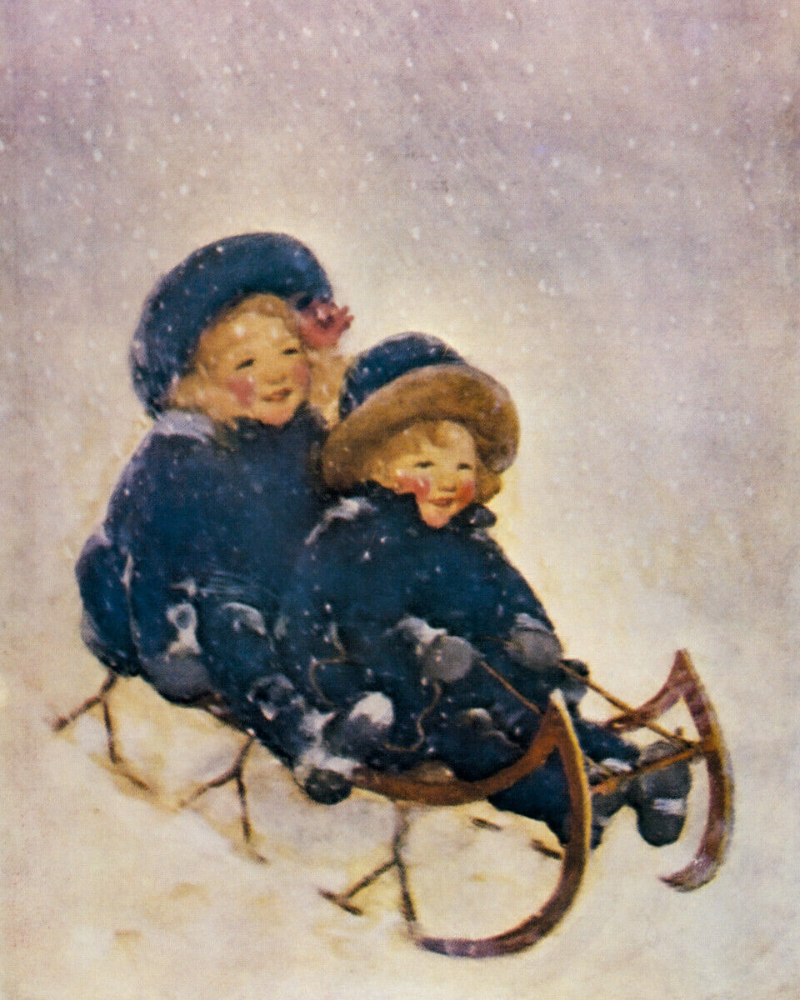
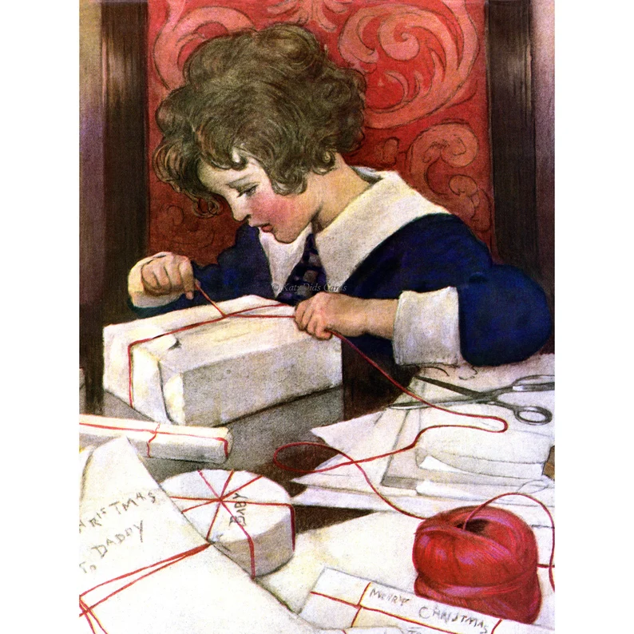
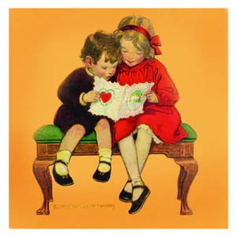

Winter

Want a handy place to plan and track your family read-alouds and traditions?
Get the Christian Read-Aloud Family Calendar!

Click button below to buy.

December
Picture Books to Read Aloud: Stories About Hannukkah and Christmas
- The Story of Hanukkah by David Adler
- Hanukkah Bear by Eric Kimmel
- The Night Before Hanukkah by Natasha Wing and Amy Wimmer
- The Trees of the Dancing Goats by Patricia Palacco
- Maccabee! The Story of Hanukkah by Tilda Balsley
- All-of-a-Kind-Family Hanukkah by Emily Jenkins
- The Small One A Good Samaritan by Katherine Brown
- This is the Stable by Cynthia Cotten
- Mary's First Christmas by Walter Wangerin Jr.
- The Giving Manger: A Christmas Family Tradition by Allison Hottinger and Lisa Kalberer
- The Last Straw by Paula Palangi McDonald
- We Were There: a Nativity Story by Eve Bunting
- Christmas From Heaven: the True Story of America's Candy Bomber by Tom Brokaw
- The Donkey's Dream by Barbara Helen Berger
- The Crippled Lamb by Max Lucado
- The Sparkle Box by Jill Hardie
- The Christmas Train A True Story by Thomas S. Monson
- Santa and the Christ Child by Nicholas Bakewell
- A Candle in the Window by Michelle Ashman Bell
- Snowmen at Christmas by Caralyn Buehner
- Christmas is Here words from King James Bible and illus. by Lauren Castillo
- Christmas Oranges by Linda Bethers
- The Last Chimney of Christmas Eve by Linda Oatman High
- Why Christmas Trees Aren't Perfect by Richard H. Schneider
- A Small Miracle by Peter Collington
- A Shepherd's Whisper by Heywood Broun
- Annika's Secret Wish by Beverly Lewis
- Mr. Finnegan's Giving Chest by Dan Farr
- The Story of Holly and Ivy by Rumer Godden
- Celebrating a Christ-centered Christmas by Emily Belle Freeman and David Butler
- Penny's Christmas Jar Miracle by Jason F. Wright
- It's a Wonderful Life for Kids by Jimmy Hawkins
- Jingle Bells: How the Holiday Classic Came to Be by John Harris
- A Christmas Like Helen's by Natalie Kinsey-Warnock
- A Christmas Carol by Charles Dickens illustrated by P.J. Lynch
- The Gift of the Magi by O. Henry illustrated by P.J. Lynch
- 'Twas the Night Before Christmas by C. Clement Moore, illustrated by Charles Santore
- The Christmas Apron by Rachelle Pace Castor
- The Christmas Sweater by Glenn Beck
- Home for Christmas by Jan Brett
- Lucia Morning in Sweden by Ewa Jydaker, illustrated by Carina Stalhberg
- Lucia Saint of Light by Katherine Bolger Hyde, illustrations by Daria Fisher
- Lucia, Child of Light: The History and Traditions of Sweden's Lucia Celebration by Florence Ekstrand
- The Clown of God by Tomie de Paola
- How the Grinch Stole Christmas by Dr. Seuss
- Mr. Willowby's Christmas Tree by Robert Barry
- The Legend of the Candy Cane by Lori Wallburg
- Gingerbread Christmas by Jan Brett
- Babushka, a Christmas Tale by Dawn Casey
- The Night Before Christmas : a Visit from St. Nicholas by Clement Clarke Moore, ill. by Tom Browning
- Dream Snow by Eric Carle
- Christmas in the Barn by Margaret Wise Brown
- Christmas for a Dollar by Gale Sears
- A Christmas Dress for Ellen by Thomas S. Monson
- The Miracle of the Wooden Shoes by Deborah Pace Rowley
- Ming's Christmas Wish by Susan L. Gong
- Saint Nicholas: The Real Story of a Christmas Legend by Julie Stiegemeyer
- Just Be Claus by Barbara Joosse
- The Legend of St. Nicholas: a Story of Christmas Giving by Dandi Daley Mackall
- On Christmas Day in the Morning by Pearl S. Buck ill. by Mark Buehner
- The Nutcracker by Susan Jeffers
- The Christmas Miracle of Jonathan Toomey by Susah Wojciechowski
- Room for a Little One: A Christmas Tale by Martin Waddell
- Christmas in the Trenches by John McCutcheon
- Hurry, Hurry, Have You Heard? by Laura Krauss Melmed
- The Carpenter's Gift: A Christmas Tale About the Rockefeller Center Tree by David Rubel
- Lighthouse Christmas by Toni Buzzeo
- I Saw Three Ships: a Magical Christmas Tale by Elizabeth Goudge
- A Savior is Born: Rocks Tell the Story of Christmas by Patti Rokus
- The Giver of Holy Gifts by Krisanne Hastings Knudsen
Chapter Books to Read Aloud: Stories About Hannukkah and Christmas
- The Advent Storybook by Laura Richie
- The Story of the Other Wise Man by Henry Van Dyke
- The Christmas Thief by Carol Lynn Pearson
- Big Susan by Elizabeth Orton Jones
- Letters from Father Christmas by J.R.R. Tolkien
- The Best Christmas Pageant Ever by Barbara Robinson
- The Christmas Jars by Jason F. Wright
- Jotham's Journey by Arnold Ytreeide
- Bartholomew's Passage by Arnold Ytreeide
- Ishtar's Odyssey by Arnold Ytreeide
- Tabitha's Travels by Arnold Ytreeide
- The Legend of Holly Claus by Brittney Ryan
- A Little House Christmas: Holiday Stories From the Little House Books Volume 1 by Laura Ingalls Wilder
- A Little House Christmas: Holiday Stories From the Little House Books Volume 2 by Laura Ingalls Wilder
- Christmas Remembered by Tomie dePaola
- A Boy Called Christmas by Matt Haig
- The Girl Who Saved Christmas by Matt Haig
- How Winston Delivered Christmas by Alex T. Smith
- How Winston Saved Christmas by Alex T. Smith
- The Vanderbeekers of 141st Street by Karina Yan Glaser
Activities: About Hannukkah and Christmas
- Decorate home for Christmas, including tree, with Christmas carols playing in the background.
- As you decorate the tree, tell the story behind ornaments that have a story attached to them, then end the evening with cookies or popcorn and hot cocoa with the tree all lit up. Some families end the night by having the kids sleep in sleeping bags around the tree
- Consider having Christmas Day festivities be relaxing, especially if your Thanksgiving Day celebration involves a lot of cleaning, cooking, and relatives. Spend Christmas Day in your pajamas, stay home with just your nuclear family, and enjoy relaxing with new gifts and simple foods to prepare like stocking treats (jerky, nuts, oranges, candy), a brunch of muffins and scrambled eggs, and a charcuterie board for dinner.
- Read aloud the book The Sparkle Box by Jill Haderlie. Put a Sparkle Box under your tree. Every night gather the family by the tree and write on slips of paper what the family did to put sparkle or the Light of Christ into someone's life that day. On Christmas Day, after all the gifts have been opened, open the Sparkle Box and read aloud the slips of paper.
- Count down the days to Christmas with an Advent Calendar
- Celebreate Hanukkah by lighting a menorah, playing with a dreidel, and having a special dinner. See this site: "How to Celebrate Hanukkah as a Christian"
- Hang ornaments on your tree that each have a name of Jesus in the Bible
- Create a Jesse tree and hang up an ornament on it each day that tells the story of the family tree of Jesus. See this site: "All About a Jesse Tree"
- Limit gifts to your children using the Three Gifts of Magi Tradition. Gold = something fancy or something to encourage play, myrrh= something to care for the body, and frankincense= something to encourage spiritual growth
- Limit gifts to your children using the rhyme "Something you want, something you need, something to wear, and something to read."
- Use an Immanuel Wreath for your Advent Calendar. Every night you light a new candle in the wreath and talk about one of the names of Christ, and how you saw Christ show up in your life that day with that name.
- Wrap Christmas picture books and put under tree, and unwrap one a day to read for a picture book advent. If you don't want to wrap, use gift bags, even plain paper brown ones. Or just read one book a day without wrapping and unwrapping.
- Display a Nativity Set in your home, but hide the baby Jesus figure to show that you are waiting for Jesus to come. Talk about what you can each do to prepare to receive Baby Jesus. Put him in the manger on Christmas Day.
- Buy or make an ornament for each person in the family that has special meaning for something signficant that happened the past year. When your child leaves the home to start his or her own home, give him or her the collection of ornaments.
- Decorate your tree with handmade "What Shall I Give Him?" ornaments, directions here: "My Gift to Christ Ornaments"
- Use your tree as an Advent Calender. Every night gather around it with the lights on and put something sweet under its branches. Then each person shares something sweet he or she experienced that day that brought the love of God into his or her life. Then eat the sweet treat.
- Make and give out handmade gifts
- Attend or watch a performance of the Nutcracker Ballet
- Anonymously leave gift cards or envelopes full of cash on people's porches or hand them out at stores, dressed up as Santa, Mrs. Claus, or an elf
- Play and/or sing Christmas songs and carols in your home and car
- Host a Christmas sing-a-long singing Christmas songs, gathered around a piano or karaoke machine
- Host or attend a "Journey to Bethlehem" event
- Attend a Messiah concert and singalong
- Participate in or attend a live Nativity event
- Celebrate the Swedish holiday of St. Lucia's Day on December 13
- Walk or drive through a place that has a Christmas light display
- Participate in Angel Tree giving
- Participate in giving a shoebox of goodies with Operation Christmas Child sponsored by Samaritan's Purse
- Solicit donations from friends and/or extended family for a Sub-for-Santa family. Involve your children in shopping, wrapping, and delivering gifts anonymously to the Sub for Santa family
- Make gingerbread houses, or just gingerbread cookies in the shape of houses (see Pioneer Woman Cooks: A Year of Holidays p. 318)
- Give simple gifts to your neighbors like a loaf of bread, small kitchen gadget, or plate of cookies
- Host a Christmas cookie exchange so that you take home a variety of cookies to share with family and friends
- Send Christmas cards
- Anonymously give a family a gift on each of the Twelve Days of Christmas by leaving the gift on the doorstep, knocking or ringing the doorbell, and running away so you are not seen
- Host a talent show with friends and family, and ask for donations of boxed and canned goods for admission and donate to food pantry
- Go caroling, especially to lonely people at a nursing home or assisted living center
- Watch The Nativity Story movie
- Celebrate Jolabokaflod. This word translates into "Christmas Book Flood." It is an Icelandic Christmas Eve tradition of exchanging gifts of books on Christmas Eve and sipping hot cocoa while you read them. If Christmas Eve is already full of activities, choose another night to do it.
- Watch A Charlie Brown Christmas TV special
- Watch The Best Christmas Pageant Ever TV special
- Watch The Muppet Christmas Carol movie
- Watch It's a Wonderful Life movie
- Watch Elf movie
- Watch White Christmas movie
- Watch Christmas in Connecticut movie
- Watch Instrument of War movie at byutv.org
- Watch A Winter Thaw movie at byutv.org
- Watch Christmas Jars movie at byutv.org
- Watch Silent Night movie at byutv.org
- Deliver a Christmas Jar to someone anonymously
- Hang up a banner in your kithen or family room where everyone gathers that says, "Happy Birthday Jesus!" Invite each family member to sign it with a scripture that has especially guided them or resonated with them this past year.
- Host a Bethlehem Supper on Christmas Eve by candlelight, eating Middle Eastern food that Jesus would have eaten: olives, fish, flat bread, etc.
- Act out Nativity Story from Luke 2 on Christmas Eve
- Be Santa for each other in the family by stuffing stockings anonymously.
- Participate in a gift exchange on Christmas Day.
- Host Christmas Dinner, and invite people who might be lonely on Christmas Day to attend, and use these conversation starters with one under each plate:
Christmas Conversation Starters
- On Christmas Eve or Christmas Day, gather as a family to discuss what gifts you will give to Jesus. Reading aloud the book The Giver of Holy Gifts by Krisanne Hastings Knudsen, found here, can set the stage for the discussion. The book shares what gifts Jesus has given to us. Ask family members what gift each one might give to Jesus in the coming year. Invite each family member to write the gift down on a slip of paper. Put the slips of paper in an envelope to put in mom's stocking to open next year, or a wrapped box. Put box or envelope away with the Christmas decorations, then put under (if box) or on the tree (if envelope) next year. Open or unwrap and reflect upon, on Christmas Eve or Christmas Day. Also invite each family member to write a sin he or she will give up and have them write it on a piece of paper and insert these in a black envelope, to represent a lump of coal. Open up next year and let family members review what they wrote the previous year, before they write a new gift to give and a sin to give up.
- After Christmas Day dinner, serve a birthday cake for Jesus and sing "Happy Birthday" to Him. Before eating cake, let each family member review the gifts given to Jesus by each family member (see bullet point above).
- Celebrate Boxing Day, Dec. 26, by cleaning up wrapping paper and boxes, and boxing up stuff to give away, then playing board games for the rest of the day and eating leftovers
Food from PWCYH (Pioneer Woman Cooks a Year of Holidays)
- Mulled Cider p. 326 PWCYH
- Sugar Cookies p. 314 PWCYH
- Gingerbread Houses or Cookies p. 318 PWCYH
- Chocolate Candy Cane Cookes p. 306 PWCYH
- Caramel Apple Sweet Rolls p. 321 PWCYH
- Prime Rib p. 330 PWCYH
- Yorkshire Pudding p. 332 PWYH
- Rosemary Garlic Roasted Potatoes p. 335 PWCYH
- Brussels Sprouts with Cranberries p. 336 PWCYH
Books for Parents: About Hannukkah and Christmas
- The Nativity Story by Angela Hunt
- Unwrapping the Greatest Gift: A Family Celebration by Ann Voskamp
- Unwrapping the Names of Jesus: An Advent Devotional by Asheritah Ciuciu
- Our Family Christmas: Creating Meaningful and Memorable Christ-Centered Traditions by Christie Gardiner
- Skipping Christmas by John Grisham
- The Christmas Box by Richard Paul Evans
- A Christmas Carol by Charles Dickens
- The Man Who Invented Christmas by Les Standiford
- The December section of The Lifegiving Home by Sally Clarkson
Get the Christian Read-Aloud Family Calendar!
Click button below to buy.

January
sPicture Books to Read Aloud: Stories About New Year, New Beginnings, Dreams, Goals, Winter, and Martin Luther King Jr.
- Spread Some Kindness Share Some Light by Apryl Stott
- Snow Horses by Patricia Maclachlan
- The First Snowfall by Anne Rockwell
- Mrs. Muddle's Holidays by Laura F. Nielsen
- A Time to Keep the Tasha Tudor Book of Holidays by Tasha Tudor
- Squirrel's New Year's Resolution by Pat Miller
- Our Walk With Christ by Marilee Joy Mayfield
- The Lights in the Church by Marilee Joy Mayfield
- Fanny's Dream by Caralyn Buehner
- Snow by Roy McKie
- An Orange In January by Diana Hutts Aston
- Lucia and the Return of Light by Phyllis Root
- The Big Snow by Berta Hader
- The Blizzard by Betty Ren Wright
- Owl Moon by Jane Yolen
- Katy and the Big Snow by Virginia Lee Burton
- The Big Snow by Jonathan Bean
- When the Snow is Deeper Than My Boots Are Tall by Jean Reidy
- The Mitten by Jan Brett
- The Snowy Day by Ezra Jack Keats
- The Hat by Jan Brett
- Snowflake Bentley by Jacqueline Briggs Martin
- Brave Irene by William Steig
- I Have a Dream by Dr. Martin Luther King Jr.
- Wintercake by Lynn Rae Perkins
- Samson in the Snow by Phillip C. Stead
- Winter is the Warmest Season by Lauren Stringer
- Almost Time by Gary D. Schmidt and Elizabeth Stickney
- A Perfect Day by Carin Berger
Chapter Books to Read Aloud: Stories About New Year, New Beginnings, Dreams, Goals, Winter, and Martin Luther King Jr.
- Chronicles of Narnia Series by C.S. Lewis
- Twelve Kinds of Ice by Ellen Bryan Obed
- Astrid the Unstoppable by Maria Parr
- The Toothpaste Millionaire by Jean Merrill
- Misty of Chincoteague Island by Marguerite Henry
- The Year Money Grew on Trees by Aaron Hawkins
- Where the Red Fern Grows by Wilson Rawls
- Miracles on Maple Hill by Virginia Sorenson
- Little Lord Fauntleroy by Frances Hodgson Burnett
- A Little Princess by Frances Hdogson Burnett
Activities: About New Year, New Beginnings, Dreams, Goals, Winter, and Martin Luther King Jr.
- Host a New Year's Eve Party with tabletop games, lots of substantial snacks, and a countdown to the New Year with noisemakers. Ask friends to bring a favorite snack, a favorite tabletop game, and serve a hearty soup or stew with chips or bread.
- Host a New Year's Day Brunch or Dinner and use these conversation starters: New Year Conversation Starters
- Play Guess Who Wrote the Goal: everyone writes a silly goal and a serious goal each on a piece of paper, then read them aloud and guess who said what.
- Host a Year In Review Dinner: fix a favorite dish of the family's, and have everyone share a favorite thing that happend last year and a dream for the new year.
- Have dinner any day of the month with New Year's Conversation Starters, see link above
- Make paper snowflakes to decorate your home
- Have a Pack-Up-the-Tree party by inviting the children's friends over to help. Listen to big band music from the 1940s while you work, and then have an easy fun meal together afterwards like pizza, a charcuterie board or soup and bread.
- Put away the Christmas decorations and decorate for the New Year with paper snowflakes and jewel-toned pom-poms and banners
- After putting away the Christmas decorations, eat a snack together like popcorn, while reading aloud either of these books: Mrs. Muddle's Holidays by Laura F. Nielsen or A Time to Keep by Tasha Tudor. Talk about what you want to do in the coming year for the holidays and ordinary days too.
- Keep up the white twinkle lights from Christmas or put up white twinkle lights
- Sledding
- Slekking (go hiking with a sled, and when you get to the top of the hike, sled down the trail)
- Snowshoeing
- Iceskating
- Skiing
- Making snowmen
- Have a Bibliophiles' Gift Party: everyone brings a used book, wrapped to exchange and fight over, then play a book-based tabletop game
- Have a "Snuggle In with Books Night," even weekly, where everyone snuggles in blankets around the fire in fireplace or the warmth of a spaceheater to read books silently for an hour with substantial snacks instead of dinner. Have candlelight, and soft music playing, then at the end before going to bed, everyone shares something they learned from their reading.
- Use these at dinner or other mealtime: Conversation Starters for Book Lovers. You could also use them for your Snuggle In with Books Night or Bibliophiles' Party
- Fill up a box of books your family would like to donate. Then visit as many Little Library Boxes in your area in a day, trading out one of your old books for a book from each Little Free Library Box. Go here to find a map.
- Host a Vision Retreat to create vision boards and discuss goals. Provide poster board or big pieces of paper, old magazines to cut out photos, scissors, glue sticks, pens, etc.
- Host a board game night with hot cocoa and/or herbal tea, an easy dinner (pizza or substantial snacks), music, and candles
- Shovel someone else's driveway anonymously
- Do a jigsaw puzzle while conversing or listening to an audiobook
- Do handicrafts while listening to an audiobook, sitting by a fire or indoor space heater
- Host a movie night with popcorn, hot cocoa and herbal tea
- Watch the movie Mully Directed by Scott Haze
- Watch the movie War Room
- Have dinner conversation using these:
Winter Days Conversation Starters
Food from PWCYH (Pioneer Woman Cooks a Year of Holidays)
- Resolutions Smoothies for New Year's Day Brunch p. 3 PWYH
- Baked French Toast for New Year's Day Brunch p. 8 PWYH
- Hoppin' John Stew for New Year's Day Dinner p. 18 PWYH
- Black-eyed Pea Salsa for New Year's Day Dinner p. 15 PWYH
- Loaded Cornbread for New Year's Day Dinner p. 20 PWYH
- Collard Greens for New Year's Day Dinner p. 22 PWYH
- Explore new soup recipes
- Explore new bread, especially sourdough, recipes
Books for Parents: Stories About New Year, New Beginnings, Dreams, Goals, Winter, and Martin Luther King Jr.
- The 7 Habits of Highly Effective People by Stephen Covey
- The Power of the 8th Habit by Stephen Covey
- Total Money Makeover by Dave Ramsey
- You Need a Budget by Jesse Mecham
- The Read-Aloud Family Handbook by James Trelease
- My Journey Of Faith: An Encounter with Christ: and How He Used Me to Spread His Love to the Poor by Charles Mulli
- Atomic Habits by James Clear
- Treasuring God in Our Traditions by Noel Piper, free download is here.
- The Laws of Lifetime Growth by Dan Sullivan
- The January section of The Lifegiving Home by Sally Clarkson
